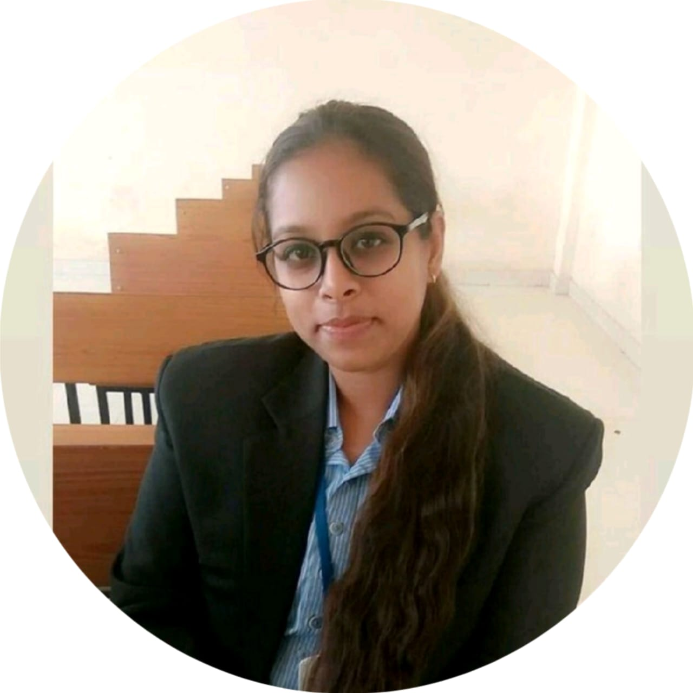

Aishna Suneja

Career Objective
I am looking for a platform which enables me to obtain a responsible and challenging position that will
utilise my academic achievements to build a promising career & achieve success in the field of my knowledge
by expanding my knowledge and and create opportunities for personal and professional growth with hard work and
innovation to achieve the goal of the organisation and me also.
Key Skills
- Skilled communication
- Management skills
- Spoken English / fluent English speaking
- Reading / writing in languages/ calligraphy
- Multi Tasker
- Verbal and written communication skills
- Very Precise to work
Work Experience
- 1 year of experience at "Teleperformance" Customer Service Associate - Voice Flipkart Back Office MS.
- 4 months of experience at Goa brewing craft co. beer.
- 3 months of experience at "Cidade Goa" under the accounts department.
- 6 months of experience at "Teleperformance" at a click to chat process.
Qualification
- Graduated degree - Douible major in English and Geography.
(Parvatibai Chowgule college of Arts and Science)
- 12th - 67.8% (Kendriya Vidyalaya INS Mandovi)
- 10th - 6.6 CGPA (Kendriya Vidyalaya INS Mandovi)
Personal Details
DOB - 24th March 1998
Sex - Female
Nationality - Indian
Known Languages - English, Hindi
© Aishna Suneja. All rights reserved.